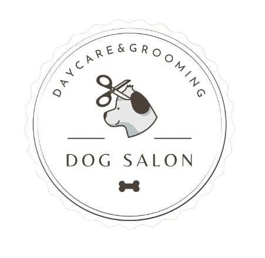
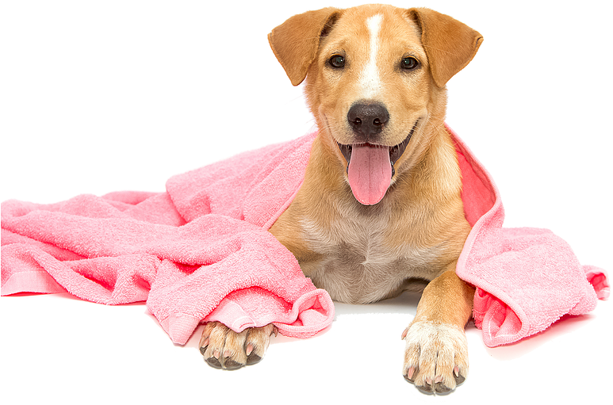

DOG SALON
Beleza e bem-estar em perfeita harmonia para seu o melhor amigo.
O segredo para um pet saudável e cheio de charme.
Quem somos?
Bem-vindo à DOG SALON, uma empresa de cuidados para pets especializada em oferecer serviços de groomer de alta qualidade e atendimento personalizado. Estamos aqui para cuidar e transformar a aparência dos seus animais de estimação, proporcionando-lhes uma experiência de bem-estar e beleza incomparável.
Com profissionais especializados em grooming, oferecemos cuidados completos para garantir que seu cãozinho fique limpo, cheiroso e com um estilo impecável.
Na DOG SALON, priorizamos a satisfação de nossos clientes e seus animais de estimação. Estamos sempre prontos para ouvir suas preocupações, responder às suas perguntas e fornecer aconselhamento especializado sobre os cuidados contínuos para o seu pet. Queremos estabelecer uma parceria duradoura com você e contribuir para a saúde e felicidade do seu animal de estimação.
Nossa missão é oferecer um ambiente seguro, acolhedor e livre de estresse para o seu pet durante todo o processo de grooming. Entendemos que nem todos os animais de estimação gostam de ser tosados ou cuidados, e nossa equipe está treinada para lidar com diferentes temperamentos e necessidades individuais. Nós nos esforçamos para tornar a experiência o mais agradável possível para o seu pet, garantindo que ele se sinta confortável e relaxado em nossas instalações.
Nossos serviços
Com uma equipe altamente qualificada e apaixonada por animais, estamos comprometidos em oferecer um ambiente tranquilo e confortável, onde os cães se sintam relaxados e bem cuidados.
Acreditamos que a saúde e o bem-estar dos cães são fundamentais, e nos esforçamos para oferecer um serviço personalizado que atenda às necessidades específicas de cada animal de estimação.
Confie em nós para cuidar do seu cão como se fosse da nossa própria família, e deixe a Dog Salon ser o destino de confiança para todos os seus serviços de groomer.
Oferecemos uma ampla gama de serviços especializados para cuidar dos animais de estimação de forma completa e profissional. Nossos serviços incluem:
BANHO E TOSA PERSONALIZADOS
Nossos groomers altamente qualificados estão prontos para proporcionar um banho completo e tosa personalizada para cada animal de estimação. Desde a escolha do shampoo adequado até o corte de pelos específico por raça, garantimos que seu pet sairá com uma aparência impecável.
TRATAMENTOS DE PELE E PELAGEM
Realizamos tratamentos para a saúde e beleza da pele e pelagem dos animais. Utilizamos produtos de qualidade e técnicas especiais para tratar problemas como pele seca, coceira, alergias e remover pelos soltos, deixando o seu pet com uma pelagem saudável e brilhante.
HIGIENE DENTAL E CUIDADOS BUCAIS
Realizamos escovação de dentes, remoção de tártaro e oferecemos orientação sobre a importância da higiene bucal para a saúde geral do seu pet.
MASSAGEM E RELAXAMENTO
Proporcionamos uma experiência agradável e calmante, aliviando tensões musculares e promovendo o relaxamento do seu animalzinho.
TRATAMENTOS TERAPÊUTICOS ESPECIAIS
A nossa equipe oferece tratamentos terapêuticos para animais com necessidades específicas. Utilizando técnicas como aromaterapia, acupuntura e fisioterapia, ajudamos a melhorar a qualidade de vida dos animais de estimação que possam apresentar problemas musculares, dores ou estresse.
Nossa equipe
Nossa equipe é formada por profissionais apaixonados por animais e dedicados a fornecer os melhores cuidados para o seu pet. Cada membro da nossa equipe é altamente treinado e experiente em todas as áreas de grooming. Nós entendemos a importância de proporcionar uma experiência tranquila e agradável para o seu animal de estimação durante o processo de cuidados. Trabalhamos com calma, paciência e carinho para garantir que cada pet se sinta confortável e seguro durante o tempo em que estão conosco. Além disso, nos esforçamos para manter um ambiente limpo, higiênico e seguro para garantir a saúde e o bem-estar de todos os animais que cuidamos. Estamos comprometidos em oferecer um serviço excepcional e estabelecer um vínculo de confiança com cada um dos nossos clientes de quatro patas. Sua satisfação e o bem-estar do seu pet são nossa prioridade máxima.
Conheça nossos profissionais:
MARIA: Especialista em Tosa

LUCAS: Especialista em Tratamentos de Pele e Pelagem
JOÃO: Especialista em Higiene Dental

ANA: Especialista em Massagem e Relaxamento
RODRIGO: Especialista em Tratamentos Terapêuticos
Deseja saber mais?
Entre em contato conosco para agendar uma consulta ou saber mais sobre nossos serviços. Estamos ansiosos para cuidar do seu pet e ajudá-lo a se sentir e parecer incrível.
Na DOG SALON, seu pet é tratado com o carinho e cuidado que ele merece.
TELEFONE: (00)0000-0000
EMAIL: dogsalon@gmailficticio.com
INSTAGRAM (ficticio): @dogsalon
Inscreva-se para saber mais sobre nossos serviços
Se preferir, para saber mais sobre os nossos serviços e descobrir como podemos cuidar do seu amado pet, inscreva-se abaixo e entraremos em contato com mais informações.
Estamos ansiosos para atender você e seu pet com os melhores serviços de groomer disponíveis!